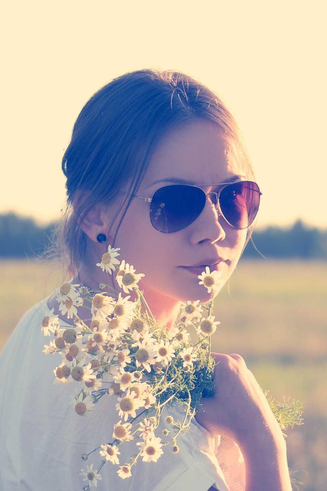
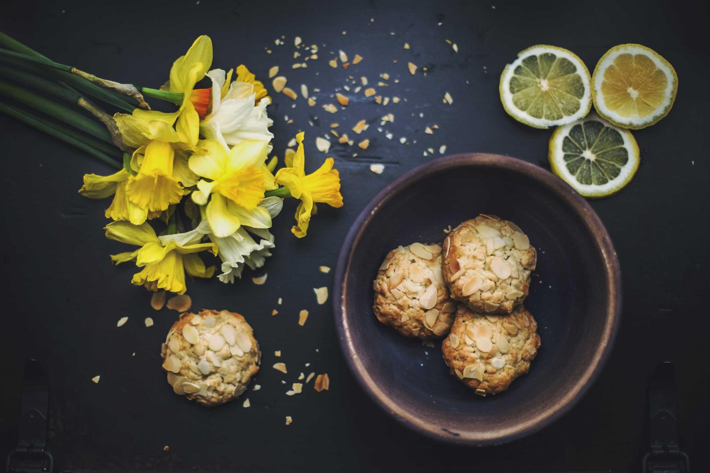
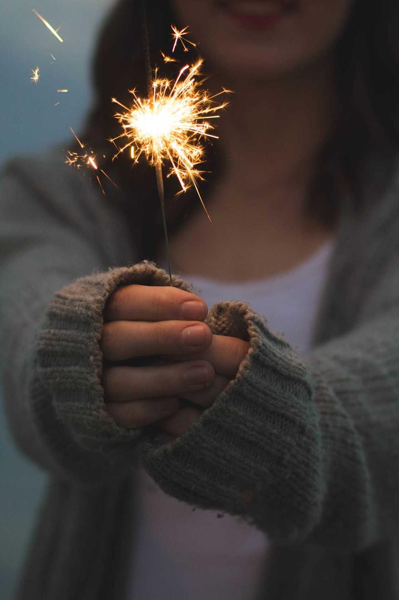
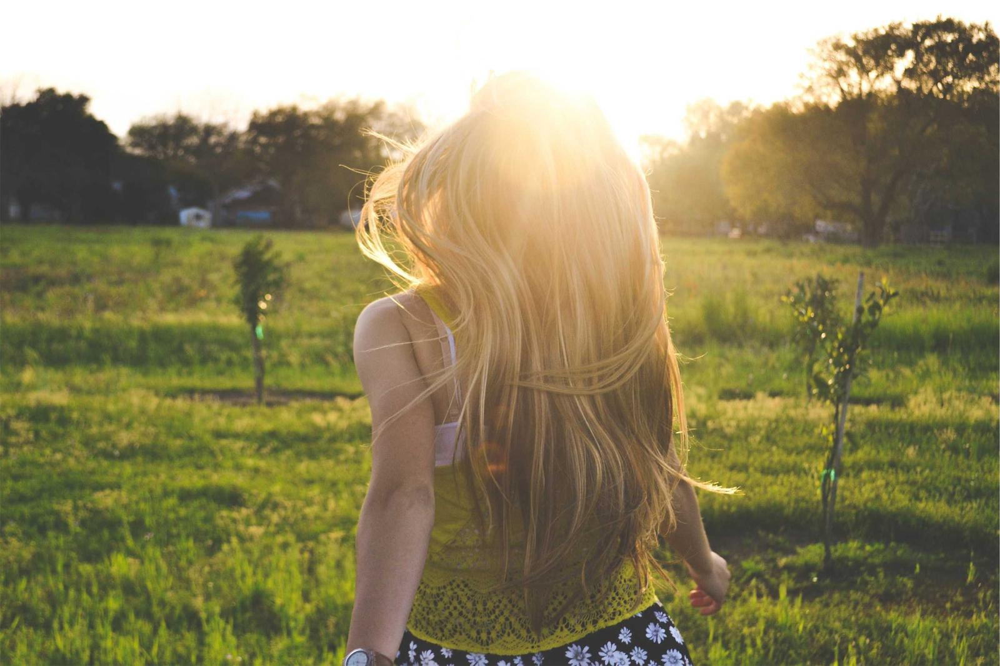
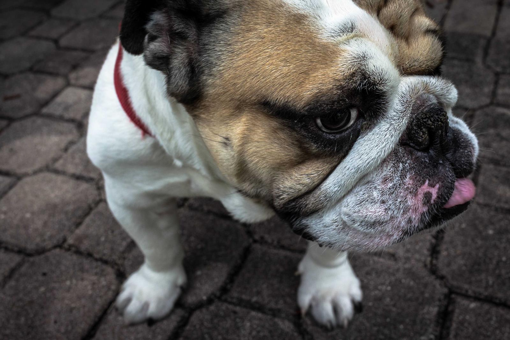

From
Mike
Saturday
Sarah picked chamomile for your tea.
From
Aunt Carol
Sunday
A little visitor in the woods behind my house.


From
Jake
Saturday
Sparklers on the porch. We missed you!
New for you

Video from Sarah 3 photos from Mike
3 photos from Mike

Photo from Lily “Meet Biscuit! He snores.” Message to the whole family